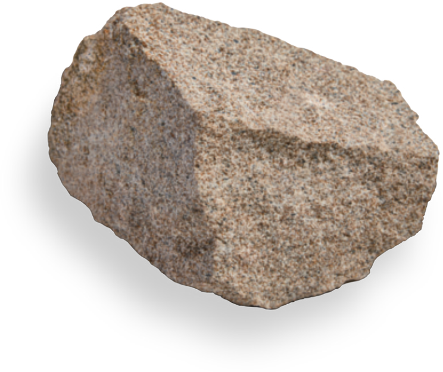
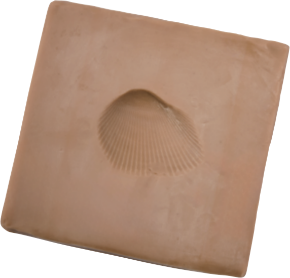
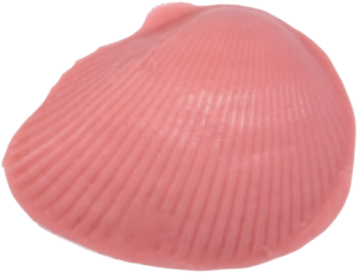
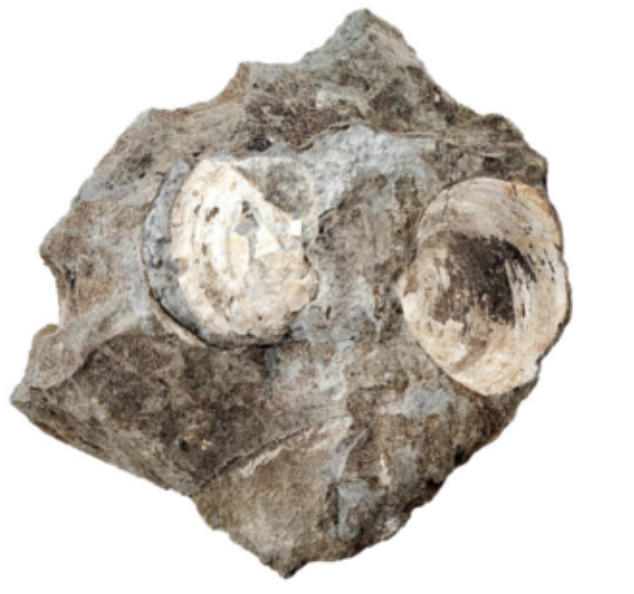
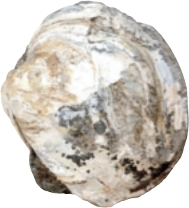

← 과학 실험실
지층·퇴적암·화석
알갱이의 모습을 보고 퇴적암 분류하기
번호가 붙은 암석을 살펴보고 이암·사암·역암으로 나누세요.
몸체와 흔적이 남은 화석 비교하기

자세히 관찰하기
확대 후 사진을 끌거나 방향키로 옮겨 보세요.
사진은 같은 배율이 아닙니다. 화면에 보이는 크기로 실제 크기를 비교하지 마세요.
점토의 자국과 굳은 반죽 비교하기
점토에 조개껍데기 자국을 만들고, 알지네이트 반죽을 부어 모형을 만드세요.
모형과 실제 화석




모형은 생물의 모양이 남는 과정을 보여 줍니다. 실제 화석이 만들어지는 시간과 재료는 모형과 다릅니다.
- 물이 담긴 통에 퇴적물을 붓습니다.
- 알갱이 크기에 따라 어떻게 쌓일지 관찰합니다.
- 여러 번 부어 지층을 만듭니다.
- 어느 층이 가장 오래되었는지 확인합니다.
실험 조건
밀도·모양이 비슷한 알갱이를 잔잔한 물에 넣어 비교합니다
관찰 결과
퇴적물을 부어 지층을 만들어 보세요.
관찰
빈 통퇴적물을 부어 층이 쌓이는 순서를 살펴보세요.
실험 결과의 의미
쌓이는 순서 먼저 쌓인 층이 아래에, 나중에 쌓인 층이 위에 놓입니다.
알갱이 크기 이 모형처럼 밀도·모양이 비슷하고 물이 잔잔하면 큰 알갱이가 먼저 가라앉습니다. 흐름과 밀도·모양이 달라지면 순서도 달라질 수 있습니다.
화석 지층 속 화석으로 그 층이 쌓일 당시의 환경과 생물을 알 수 있습니다.
확인 문제
4문제
색이 같은 퇴적암 X·Y를 관찰했다. X는 알갱이가 모래보다 작고, Y는 주로 모래 크기의 알갱이로 이루어져 있다. 알맞은 분류는?
X는 모래보다 작은 알갱이이므로 이암, Y는 주로 모래 크기의 알갱이이므로 사암입니다. 색이 같아도 알갱이의 크기가 다르면 서로 다른 종류로 분류할 수 있습니다.
암석에서 큰 자갈 사이에 모래와 더 작은 알갱이가 함께 보였다. 이 표본을 분류한 판단으로 알맞은 것은?
역암에는 모래보다 큰 자갈과 작은 알갱이가 함께 들어 있을 수 있습니다. 역암이 자갈로만 이루어져야 하는 것은 아닙니다.
변형되지 않은 지층 모형에서 아래부터 진흙층·자갈층·모래층이 보인다. 세 종류를 따로 한 번씩 부었다면 부은 차례는?
각각 따로 부은 모형에서는 먼저 넣은 퇴적물이 아래에 쌓입니다. 따라서 진흙, 자갈, 모래의 차례입니다. 섞인 알갱이의 가라앉는 순서와 여러 번 부은 층의 순서는 구별합니다.
물고기의 뼈 모양 A, 나뭇잎의 잎맥 모양 B, 새의 발자국 C가 각각 화석으로 남았다. 몸체와 흔적의 연결은?
물고기의 뼈와 나뭇잎은 생물 몸체의 모습입니다. 발자국은 발 자체가 아니라 생물이 활동하며 남긴 흔적입니다.